ГОРОД ТОРЖОК
1. Борисоглебский монастырь
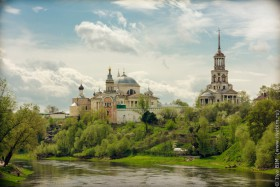 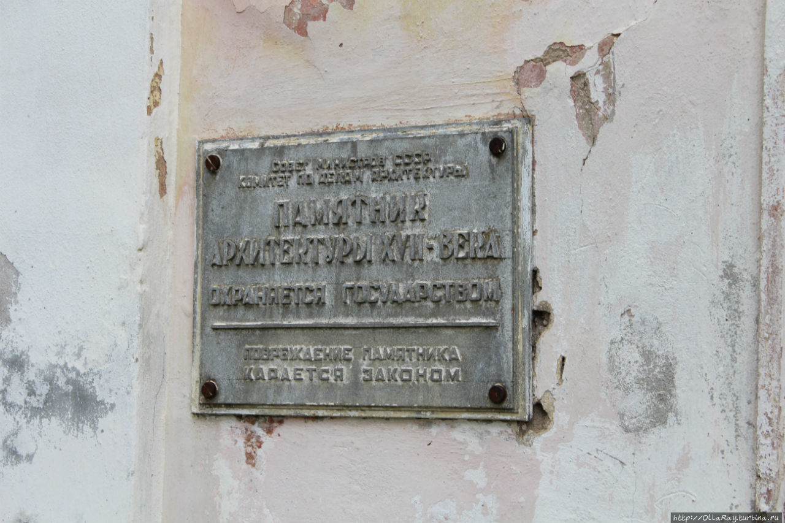Из житийной литературы XVII века следует, что монастырь основал в 1038 году боярин Ефрем , бывший конюшим киевского князя Владимира I Святославича . Причиной, подвигшей боярина к основанию монастыря, было убийство Святополком Бориса и Глеба , после которого он решил удалиться от светской жизни и заложить монастырь на берегу реки Тверцы.
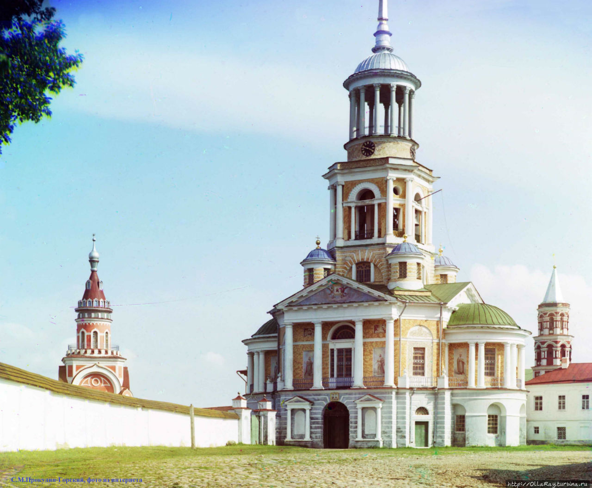Изначально боярин Ефрем якобы основал обитель на возвышенности у реки, а в 1038 году был построен храм , получивший название Борисоглебского в честь Бориса и Глеба и давший название всему монастырю. В исторических источниках первые сведения о Торжке появляются в середине XII века.
В 1607 году при взятии Торжка поляками собор сильно пострадал. Самая древняя, сохранившаяся до нашего времени, постройка монастыря — Введенская церковь, была построена в XVII веке на месте сожжённой поляками (вместе со всей братией и некоторыми жителями города старой деревянной. Большой урон монастырю нанёс пожар 1742 года.
Во второй половине XVIII века началось возрождение монастыря. В 1785 — 1796 годах на месте старого Борисоглебского собора был возведён новый с тем же названием по проекту архитектора Николая Александровича Львова. Привлекает внимание необычная по форме Свечная башня в углу монастырской стены, противоположном колокольне. Её реставрация проводилась в 1970-х — 1980-х годах.
В 1925 году монастырь был распущен, а на территории монастыря была размещена тюрьма строгого режима, которая находилась там около 50 лет. После неё в монастыре разместился лечебно-трудовой профилакторий для алкоголиков , а в последнее время - Всероссийский историко-этнографический музей.
В 1993 году в монастырь вернулись верующие, разделив помещения монастыря с музеем.
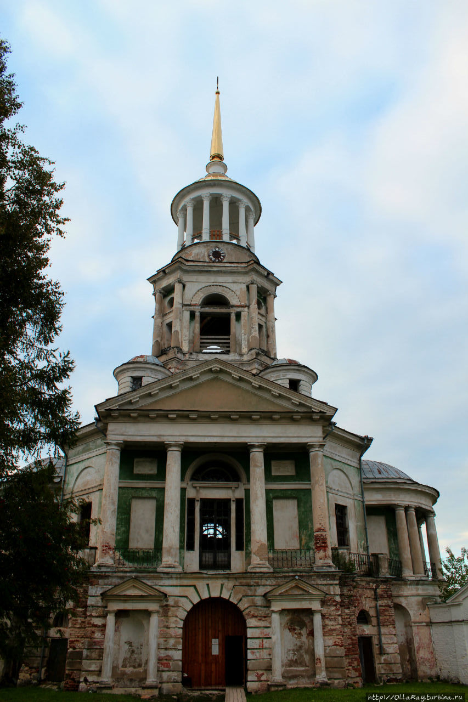 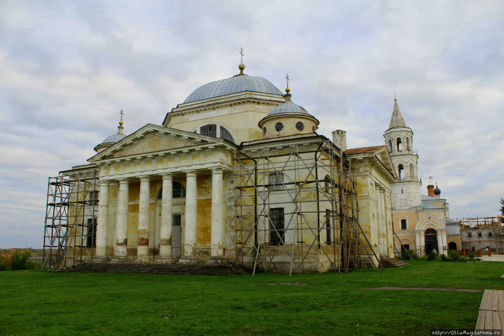 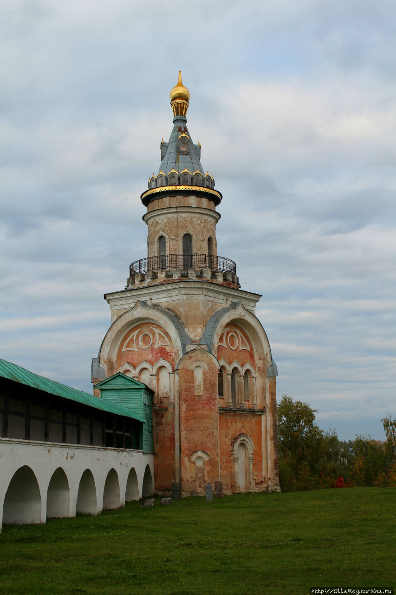2. ГОСУДАРСТВЕННЫЙ МУЗЕЙ А.С.ПУШКИНА
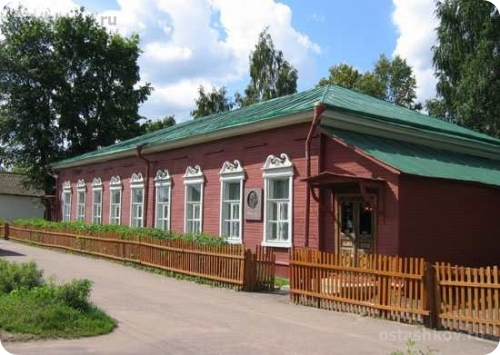
Музей открыт 3 июня 1972 г. и размещается в одноэтажном деревянном особняке
Львовых- Олениных - Балавинских. на улице, ранее называвшейся Ямской, потом
Петербургской. Сейчас эта улица почему-то Дзержинского.
Деревянный дом был построен в начале XIX века.
Пушкин проезжал через Торжок 25 раз, видимо, поэтому музей называется «пушкинским». Экспозиция семи залов музея посвящена, во-первых, поездкам по дороге Петербург-Москва в пушкинское время, во-вторых, помещикам, друзьям Пушкина, чьи усадьбы были расположены вокруг Торжка: Полторацким, Бакуниным, Львовым, Олениным и т.д.
Экспозиция посвящена путешествиям А.С. Пушкина по дороге Москва–Санкт-Петербург, его дорожным впечатлениям и их отражению в творчестве писателя. Центральная тема – пребывание поэта в Торжке и Тверской губернии. Представлены материалы о поездках Пушкина по «государевой дороге», о быте ямщиков и станционных смотрителей. В музее воссоздан интерьер почтовой станции, гостиной дворянского дома XIX в.
Изобретательницей рецепта Пожарских котлет считается Дарья Евдокимовна Пожарская (1799-1854). На портрете она вместе с сыном князя Д. Волконского:
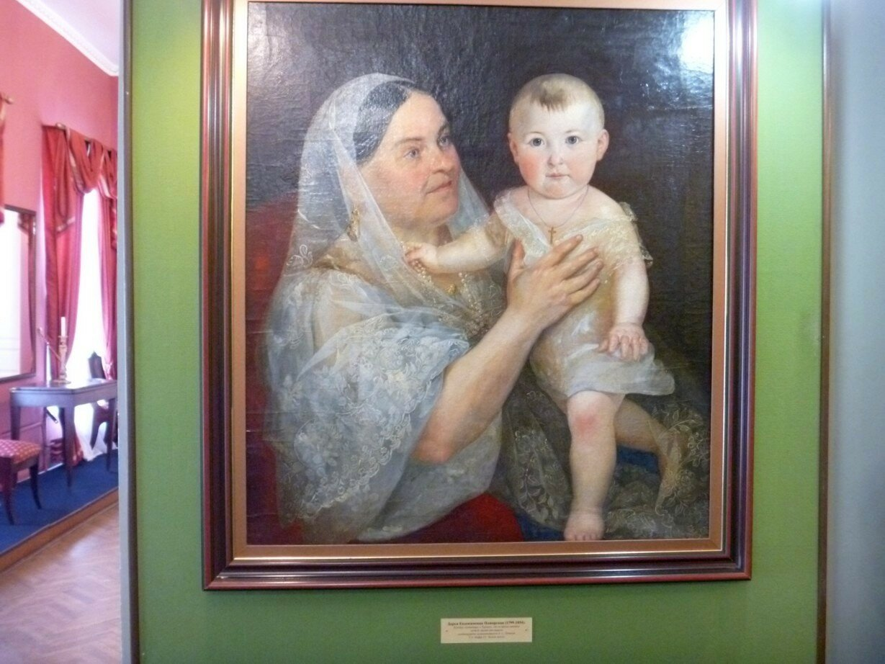 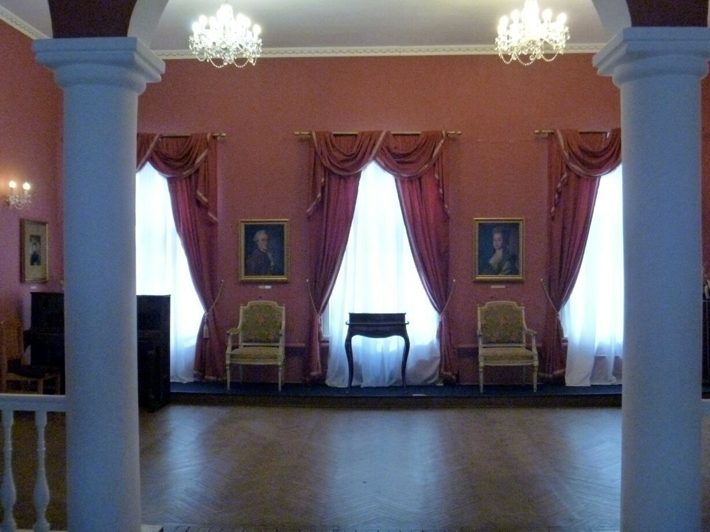3. Золотошвейное производство
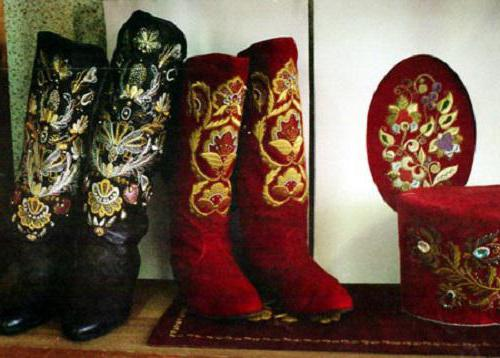 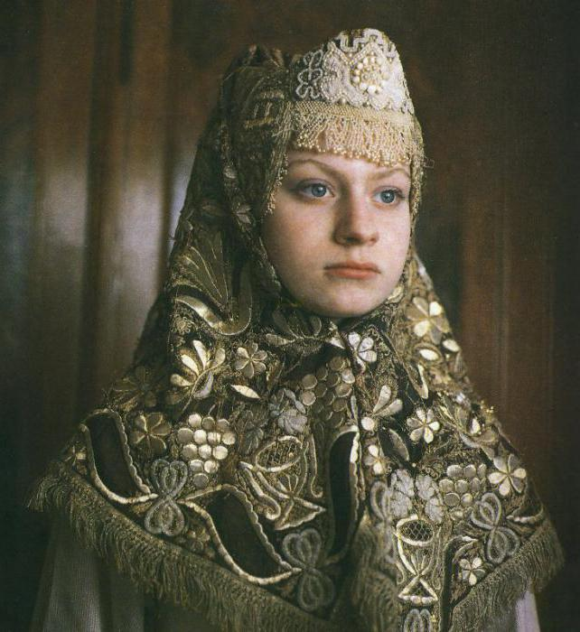
Женский головной убор, 2-я половина XIX века.
По результатам археологических раскопок ученые предполагают, что здесь вышивали наряды золотом и серебром еще в IX веке, а в XIII веке кусочек кожи с вышивкой на нем золотом был местной денежной единицей. Шитье золотыми нитями стало для Торжка выгодным промыслом. Торжокские золотошвеи расшивали золотной нитью, речным жемчугом, перламутром. не только кокошники, душегреи, платки, платья, даже обшитую сафьяном и обувь. Сафьяновые сапоги, вышитые ими, упоминаются во многих литературных произведениях.
Сначала шили золотыми нитями, стоили изделия очень дорого, носили их только богатые люди. Постепенно такие нити заменили на канитель — тонкую спиральную нить из позолоченной проволочки. Шитье стало называться золотным. А потом и эти нити поменяли на так называемые пряденые, когда тонюсенькую медную проволочку с серебряным или золотым напылением стали накручивать на льняную, шелковую или хлопчатобумажную нить. И со временем расшивать золотным шитьем стали и народную одежду.
Фоном для узоров были однотонные ткани — шелк, бархат, тафта, сафьян. Для крепости под них прокладывали полотно. Заказы поступали от царского двора, от церкви, от частных лиц. Многие бальные платья императрицы Екатерины II расшивали торжокские золотошвеи.
Вышивка икон — очень древнее искусство на Руси. Созданные золотошвеями, они превращались в уникальные произведения искусства. В Торжке, работая над заказами, трудились в XIX веке около 300 женщин.
В начале XX века на крупных международных выставках в Париже, Лондоне и других городах работы торжокских мастериц стали получать высшие награды.
Традиционно торжокские золотошвеи используют в работе рисунки с растительным орнаментом, нежные и неповторимые. Изделия мастериц находятся в Георгиевском зале в Кремле, в Андреевском зале Большого Кремлевского дворца. Панно торжокских золотошвей с изображением Храма Христа Спасителя было подарено президентом страны В. Путиным Папе Римскому.
4. ДОМ ПОЯСА
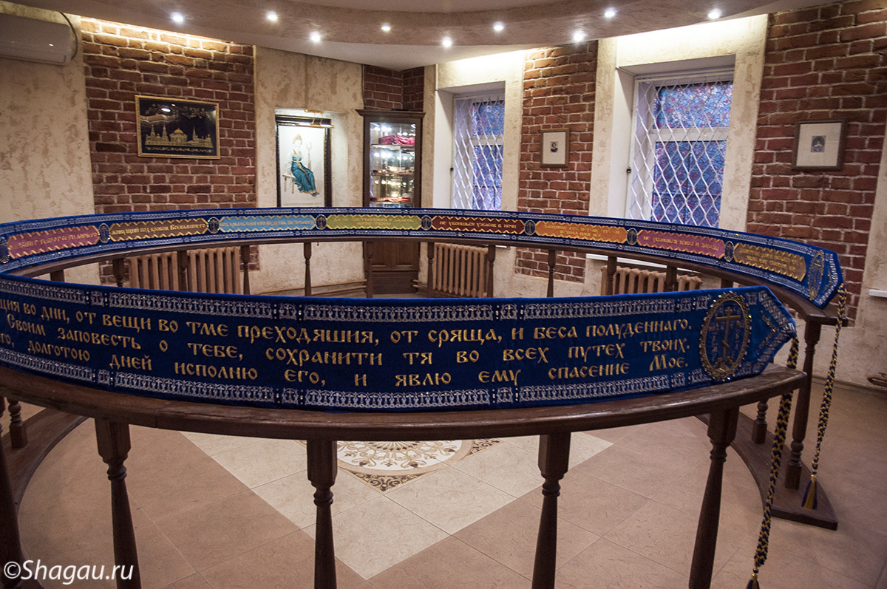При фабрике открыт единственный в России музей — Дом Пояса. Появиться на людях без пояса было неприлично, да и нечистый мог подобраться. Пояс был оберегом, и его красиво украшали, вплетая в вышивку защитные слова. А. С. Пушкин, проезжая через Торжок, покупал пояса, расшитые замечательными мастерицами. Посреди комнаты по окружности расположен уникальный вышитый пояс, длиной 12 м и шириной 25 см, с защитной молитвой Его расшивали почти год 6 мастериц. Можно войти внутрь пояса и ощутить на себе его силу. Говорят, что если загадать в это время желание, то оно сбудется.
5. АРХИТЕКТУРНО – ЭТНОГРАФИЧЕСКИЙ МУЗЕЙ «ВАСИЛЁВО»
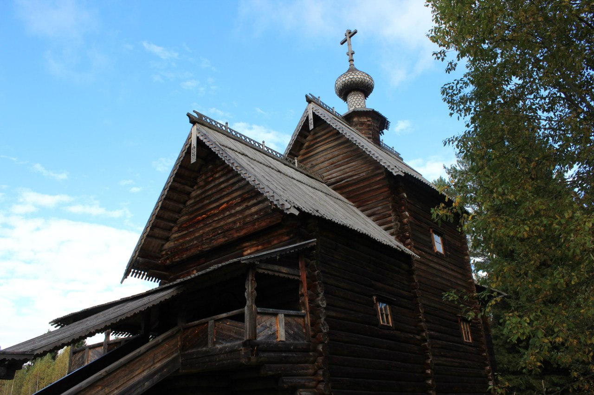Архитектурно-этнографический музей под открытым небом "Василево" создан в 1976 г. на территории усадьбы Львовых. Музей условно поделен на две части. Первая - это сама усадьба Львовых, в которой посетители могут познакомиться с культурой "дворянских гнезд". Вторая - крестьянская часть, состоящая из памятников деревянного зодчества, перевезенных сюда со всех уголков Тверской области. Она знакомит нас с бытом русской деревни XVIII-XIX вв.
6. Валунный арочный мост – «Чёртов мост»
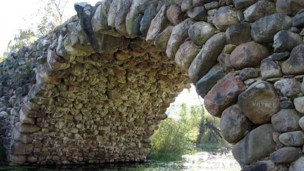На территории усадьбы «Василёво» располагается каскад из трех прудов, на ручье, спускающемся к реке Тверце. Архитектором Н. А. Львовым были выполнены запруды из камней и знаменитый стометровый арочный валунный мост с гротами, являющийся настоящим шедевром архитектурной мысли — «великолепная каменная симфония», как его называют поклонники творчества архитектора. В настоящее время мост получил широкую известность под именем «Чёртов мост», которое он получил с лёгкой руки краеведа.
7. МУЗЕЙ ВЕРТОЛЁТОВ
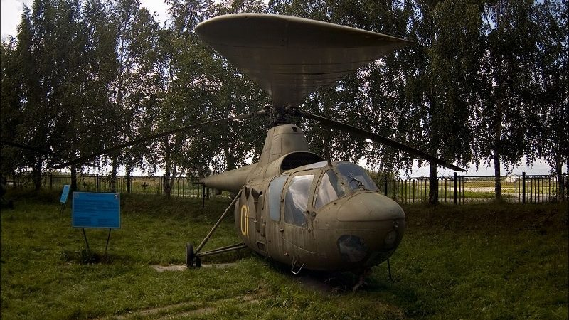Торжок славен не только своим культурным наследием, но и 344 Центром боевого применения и переучивания летного состава армейской авиации — местом, куда в первую очередь доставляют все новые вертолеты, поступившие на вооружение в РФ, и местом, куда ездят переучиваться все военные летчики российской армии. В 1990 г. бывший пилот и подполковник в отставке А.Н. Манько создал на территории 334 Центра БП и ПЛС единственный в России Музей Вертолетов.